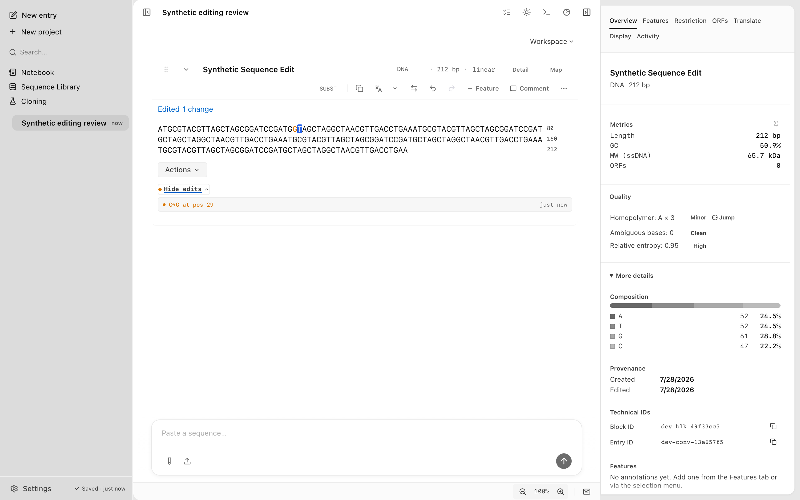
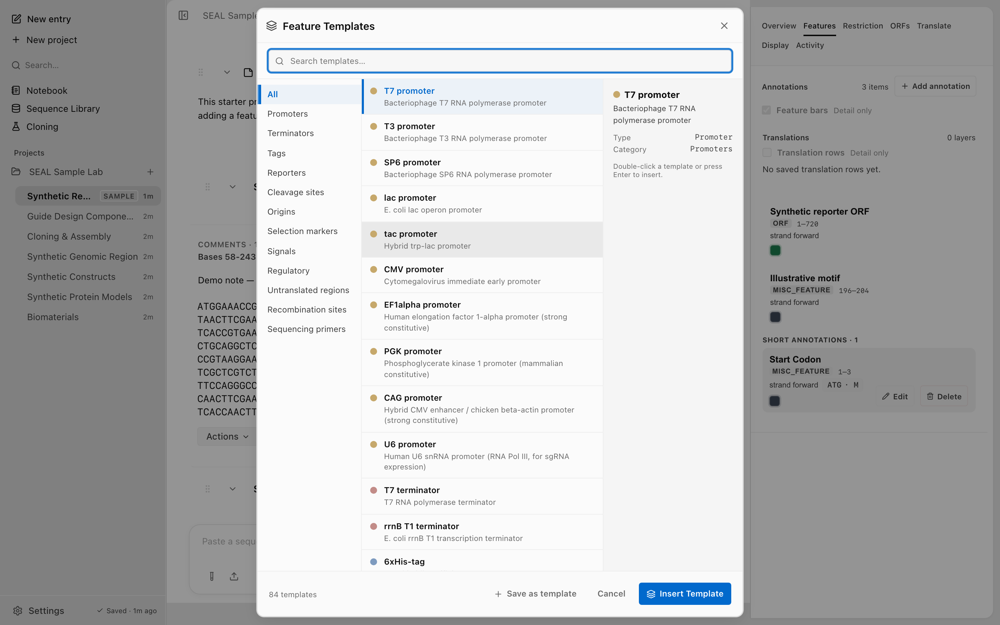

Editing and annotation
Screenshots and recordings show the direct edition. Compare editions.
Edit bases, add features, and annotate selections. Work on a block in the desktop app, or use the Rust and TypeScript CLIs against the shared workspace.
A sequence in SEAL is a block: a named record with bases, a topology, a type, and a list of features. The desktop app and the CLI read and write the same blocks, so an edit made one way is visible the other way. Set SEAL_DB_PATH to the active path from Agent Setup before running workspace commands. Replace the example block and checkpoint IDs with values from your workspace. See the CLI reference for how the database path is resolved, and Core concepts for the block model.
Edit a sequence
In the desktop app, open a block and edit its bases directly. You can also select a range to extract it, annotate it, or run a bench tool. Activity records each change with its time and source.

Before a larger edit, save a checkpoint so you can restore the block if you need to step back.
seal checkpoints save --block seal-synthetic-backbone --label "before BamHI digest"
seal checkpoints list --block seal-synthetic-backbone
seal checkpoints restore --block seal-synthetic-backbone --checkpoint-id cp-abcIn the desktop app, restoring a checkpoint asks you to confirm first, and it captures the current state as a "Before restore:" checkpoint before applying the older one, so a restore is itself reversible. The CLI checkpoints restore above runs in a single transaction and does not prompt for confirmation. It records a "Before CLI checkpoint restore:" checkpoint before applying the older one, so a CLI restore is reversible too.
Add and edit features
A feature marks a region of a block: a gene, a CDS, a promoter, a tag. Add one from a feature template, or write the fields yourself.
SEAL ships 84 built-in feature templates, covering reporters, UTRs, recombination sites, sequencing primers, affinity tags, and Kozak context. Each template carries its sequence type, and you can save your own selection as a template from the desktop app.

From the CLI, add a feature to a block with features add. The feature JSON requires type, name, start, and end; id is generated if you omit it.
seal features add --block block-id-abc \
--feature-json '{"id":"feat-reporter","type":"gene","name":"Synthetic Reporter DNA","start":0,"end":720}'
seal features update --block block-id-abc --feature-id feat-reporter \
--patch-json '{"color":"#0000ff"}'
seal features list --block block-id-abcPositions are 0-indexed: start is inclusive, end is exclusive. On a linear block, start is at most end and both fall in [0, block_length]. On a circular block, a wrap-around is allowed, so start may be greater than end.
Annotate a selection
To annotate a specific range in one step, use blocks annotate-selection. The outer --start and --end flags set the position, and the --feature-json argument supplies at least the type and name. Any start or end inside the JSON is overridden by the outer flags.
seal blocks annotate-selection --block insert1 --start 0 --end 720 \
--feature-json '{"type":"CDS","name":"Synthetic Reporter DNA"}'{
"ok": true,
"feature": { "id": "feat-...", "type": "CDS", "name": "Synthetic Reporter DNA", "start": 0, "end": 720 },
"totalFeatures": 1
}Extract a selection into a new block
Use blocks extract-selection to slice a range out of a block into a new child block. The new block keeps a link to its source through parentId. Pass --start greater than --end to wrap around the origin on a circular block.
seal blocks extract-selection --block seal-synthetic-backbone --start 100 --end 400 \
--new-name "MCS region"{
"ok": true,
"id": "a1b2c3d4-...",
"name": "MCS region",
"length": 300,
"parentId": "seal-synthetic-backbone-block-id"
}extract-selection only slices a substring of an existing block. To materialize a free-form computed sequence instead, use the TypeScript blocks add command.
Save a computed sequence as a block
The TypeScript blocks add command saves a raw sequence or supported sequence file as a workspace block. Prepare the TypeScript CLI in your checkout first. The Rust translation command prints a plain protein sequence, which you can pipe into it:
seal translate ATGAAATAG | npm --silent run dev:cli -- blocks add --type protein --name "peptide"Set --type to override the detector with dna, rna, or protein, --topology for linear or circular, and --parent to nest the new block under an existing one. With --parent set, the new block inherits the parent's conversation.
Nest a translated protein under a CDS
The TypeScript blocks translate command translates a CDS block and adds the protein as a nested child, with type=protein, the CDS as its parent, and manipulation=translate. The trailing stop codon is stripped for a complete CDS, and an internal stop raises a warning.
npm --silent run dev:cli -- blocks translate --block insert1 --from-atg --new-name "Synthetic Reporter Protein"| Flag | Default | Description |
|---|---|---|
--block <name|id> | required | Source DNA or RNA block to translate. Rejects a protein block. |
--strand <1|-1> | coding feature, else forward | Translate the forward strand or reverse complement. By default, use the strand of a coding feature covering the block. |
--from-atg | off | Translate from the first ATG or AUG instead of a fixed frame. |
--frame <n> | 0 | Reading frame offset (0, 1, or 2). Ignored when --from-atg is set. |
--new-name <n> | Translation <block> | Name for the protein child. |
Record assembly lineage
A construct assembled from several parts, such as a Gibson or Golden Gate build, cannot be expressed by a single parent link. The TypeScript blocks link-parts command records the lineage: it writes a lineage edge, so the desktop app can show "assembled from N source blocks", and stamps the construct's manipulation. Pair it with blocks add to materialize the construct.
npm --silent run dev:cli -- blocks link-parts --construct vector-insert \
--parts insert1,vector1 --manipulation gibson_assembly--manipulation is one of gibson_assembly, golden_gate_assembly, ligate, or vector_insert, and defaults to gibson_assembly. All parts must live in the same conversation. For the assembly workflow that produces the construct sequence, see Cloning and assembly.
To carry features and lineage through a save and reload, export to GenBank or GFF3. See Import and export.